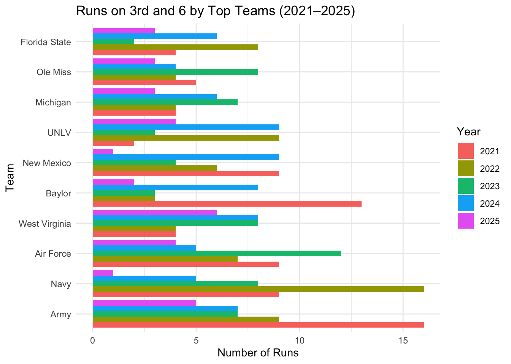

The downloaded binary packages are in
/var/folders/hb/mj10y4391xv219r79__kmdch0000gn/T//Rtmp35Fvab/downloaded_packages
── R CMD build ─────────────────────────────────────────────────────────────────
* checking for file ‘/private/var/folders/hb/mj10y4391xv219r79__kmdch0000gn/T/Rtmp35Fvab/remotes5df313e33a2/sportsdataverse-cfbfastR-b80c73a/DESCRIPTION’ ... OK
* preparing ‘cfbfastR’:
* checking DESCRIPTION meta-information ... OK
* checking for LF line-endings in source and make files and shell scripts
* checking for empty or unneeded directories
* building ‘cfbfastR_2.1.0.tar.gz’
ggplot(runs_chart_data, aes(x =reorder(pos_team, -run_plays), y = run_plays, fill =as.factor(year))) +geom_bar(stat ="identity", position ="dodge") +labs(title ="Runs on 3rd and 6 by Top Teams (2021–2025)",x ="Team",y ="Number of Runs",fill ="Year" ) +theme_minimal() +coord_flip()

Reading the Graph: Teams like Florida State, Ole Miss, Michigan, UNLV, New Mexico, Baylor, West Virginia, Air Force, Navy, and Army are listed on the y axis. The x axis represents the number of runs on 3rd and 6 plays, and each color represents a year. Army has shown to have the highest number of runs in 2021, with over 15 runs. Baylor has also had a standout year in 2021 with 13-14 runs. Navy (2022) and Air Force (2023) show high counts around 13. Most teams fluctuate totals from year to year, reflecting new play calling trends. Lastly, Florida State, Ole Miss, and Michigan have lower totals compared to other schools. Across 2021-2025, there were over 16,000 3rd and 6 plays in college football. The most common play types were passes, runs, and few punts along woth other calls like field goals and sacks.
Teams ran the ball over 3,000 times on 3rd and 6, making up about 25% of plays. The average yards gained on these runs was just 2.8, failing to convert. This would suggest that teams use runs to set up a succesful 4th down.
Running on 3rd and 6 isn’t ideal. But some teams take advantage of it more than others. From the data, the top runners include service academies like Army (16 in 2021), Air Force (12 in 2023), and Navy (16 in 2022), along with teams like Baylor (16 in 2021), and UNLV (9 in 2022 and 2024). These teams ran the ball frequenty and this could be because of other options or heavy running plays.
Runs peaked in 2024 with 829 run plays and dropped in 2025 with 487 total running plays, possibly due to changing strategies or rules.
Army leads the group with 44 total runs accross the seasons, followed by Navy and Airforce. Powerhouse offenses with strong rushing players tend to run more, while pass heavy teams like Cleamson run less frequently.
Maryland has had 75 total 3rd and 6 plays from 2021-2025. They ran 15 17 times and gained 2.5 yards. Maryland had 4 run plays in 2021, 6 in 2022, 4 in 2023, 2 in 2024, and 1 in 2025. They have shown a clear downward trend since 2021, with fewer runs in recent years. Maryland’s game has changed and they have become more conservative, more likely passing or punting more to avoid the risk of a loss like the Washington game.
Overall, running on 3rd and 6 is a risky, low reward play that can pay off or also lead to worse. Teams like Army, Navy, and Air Force run it most, while Maryland has dialed it back since 2021.